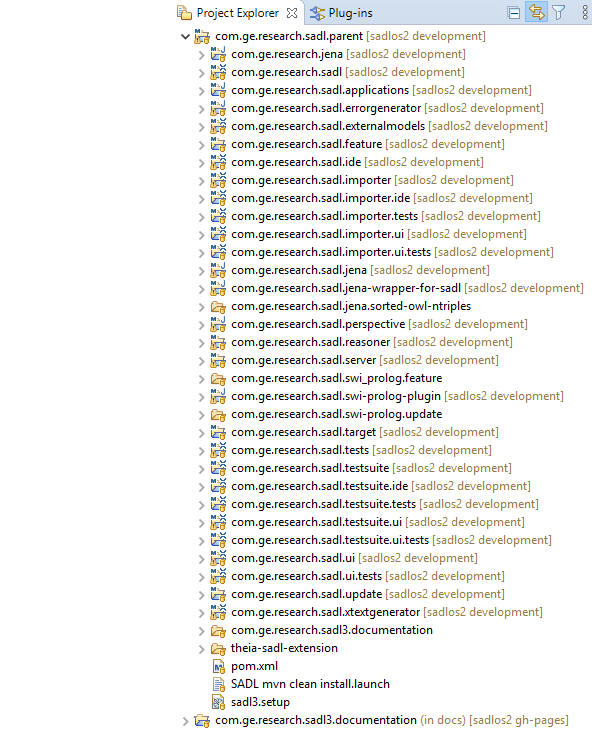

The SADL IDE consists of a number of interdependent Eclipse plug-ins that may be installed in an instance of Eclipse to provide a rich knowledge base editing environment. The plug-ins are installed together as the SADL feature. The same code base also generates the servers for WebSADL. This document gives an overview of the SADL Version 3 codebase. This document provides an overview of the plug-ins, their functions, and their major components.
The screenshot below shows the Eclipse plug-in development Package Explorer view of the SADL codebase. The com.ge.research.sadl.parent project and all of the projects under it are Maven projects. As discussed in SADL V3 Build Instructions, the everything can be build with Maven. The top-level com.ge.research.sadl3.documentation project contains the Github Pages documentation. Note that this documentation project is on a special branch (gh-pages) in the repository.

Note that two of the projects, com.ge.research.sadl.reasoner and com.ge.research.sadl.server have their own sub-projects.
SADL uses Xtext, which dictates some of the architecture. The code base also seeks to keep the Eclipse dependencies isolated to UI components so that the Eclipse version of the IDE and the browser-interfaced WebSADL can share as much code as possible. In addition, there are three separate Xtext grammars present, each of which has associated backend and ui components.
The second two grammars are quite simple and their supporting files are not complex. Most projects and files are in support of SADL.
Project com.ge.research.jena
This project contains third party jar files. Maven build places the necessary jars in the lib folder. Note that these include the reasoner-api.jar and reasoner-impl.jar files, created in the associated projects below. These jars are handled in this way because there are also needed by the server implementation.
Project com.ge.research.sadl
This project contains the SADL grammar and most of the backend files. (Jena-specific backend files are in the com.ge.research.sadl.jena project.) The project must contain an ANTLR generator file (".antlr-generator....jar") and a JFlex scanner generator file (".jflex.jar"). The GenerateSADL.mwe2 file processes the SADL.xtext grammar definition file to auto-generate code across multiple projects.
Project com.ge.research.sadl.applications
This project is used to provide a headless version for programmatic processing of SADL projects.
Project com.ge.research.sadl.errorgenerator
This project is used to process SADL messages stored in the sadlMessages.properties file into the class SadlErrorMessages. This class is then used within other SADL classes, e.g., the Jena-BasedSadlModelProcessor, to generate error messages with optional parameters. The purpose is to separate the messages from the code.
Project com.ge.research.externalmodels
This project provides an editor for a .url file that can contain URLs of external OWL models. When the Download External Models button on the Download tab of the wizard is clicked, the external OWL models are copied into the project and their mappings is added to the OwlModels folder's ont-policy.rdf file so that they can be imported into SADL models.
Project com.ge.research.sadl.feature
This project defines the SADL feature.
Project com.ge.research.sadl.ide
This project factors IDE-agnostic code out of the Eclipse SADL UI project's code to isolate UI functionality that can be reused by WebSADL.
Project com.ge.research.sadl.jena
This project contains the bulk of the backend processing code and uses Apache Jena for an OWL API. Important classes within this project include:
- IntermediateFormTranslator: converts the raw results of SADL model processing of rules, queries, and tests to the Intermediate Form by expanding nested triples, providing missing variables, etc. The Intermediate Form is then translated to the target representation by the translator of the chosen reasoner/translator pair.
- JenaBasedSadlImportProcessor: processes an OWL file or OWL file content to generate a SADL file using the OwlToSadl class.
- JeanBasedSadlInferenceProcessor: processes requests to run inference on a SADL model, executing the queries and tests contained in the model.
- JenaBasedSadlModelProcessor: the onValidate method of this class takes the SadlModel generated by the parser on composed of EFM EObjects and generates an in-memory OWL model and commands in Intermediate Form; the onGenerate method of this class saves the OWL model to the specified format and saves the commands to the appropriate target, e.g., for Jena-based reasoner/translator the rules go to a .rules file and named queries go to the OWL file.
- JenaBasedSadlModelValidator: called by the model processor, this class does type checking and other validation functions.
- MetricsProcessor: gather metrics on the SADL model being processed.
- PathFinder: where partial graph paths are supported, find the missing parts of the paths to generate complete graph patterns.
- OwlToSadl: takes an OWL file or OWL model serialized content and generates a SADL model. Can convert elements of an OWL model to their SADL equivalent.
Project com.ge.research.sadl.jena-wrapper-for-sadl
This project contains the reasoner and translator pair for Jena-based inferencing.
Project com.ge.research.sadl.persective
This project contains the SADL perspective factory.
Project com.ge.research.sadl.reasoner
This project contains two subprojects.
- reasoner-api: this project contains the Java Interface classes IReasoner and ITranslator. It also contains all of the classes defining the Intermediate Form for rules, queries, tests, etc., and the Java Interface classes ITabularDataImporter for importing tabular data and IGraphVisualizer for graphical visualizations of OWL models and SADL projects.
- reasoner-impl: this project contains configuration manager classes and the GraphViz implementation of IGraphVisualizer.
Project com.ge.research.sadl.server
This project contains two subprojects.
- sadlserver-api: this project contains the Java Interface classes ISadlServer, ISadlServerPE, and ISadlServerMD for the basic SADL Server, the extended SADL Server supporting editing and persistence, and the more extended SADL Server supporting model-based development via a Server API.
- sadlserver-impl: this project contains implementations of the above three Interface classes and a sample Java client.
Project com.ge.research.sadl.target
This project contains the file com.ge.research.sadl.target.target which must be set as the Plut-in Development Target Platform in Preferences.
Project com.ge.research.sadl.tests
This project contains JUnit tests of the backend SADL components.
Project com.ge.research.sadl.ui
This project contains the Eclipse-based IDE components.
Project com.ge.research.sadl..ui.tests
This project contains JUnit Plugin Tests for the Eclipse-based SADL UI.
Project com.ge.research.sadl.update
This project contains, after a successful Maven build, the SADL update file in the target folder.
Project com.ge.research.sadl.xtextgenerator
This project contains Xtext supporting files for JFlex.
Project theia-sadl-extensions
This project contains code supporting WebSADL.
Project com.ge.research.sadl.importer
This project contains the grammar and backend for the tabular importer template.
Project com.ge.research.sadl.importer.ide
This project contains a small amount of setup code for the template editor UI.
Project com.ge.research.sadl.importer.tests
This project is meant to contain template editor backend tests.
Project com.ge.research.sadl.importer.ui
This project contains the Eclipse UI components for the template editor.
Project com.ge.research.sadl.importer.ui.tests
This project is meant to contain template editor UI tests.
Project com.ge.research.sadl.testsuite
This project contains the grammar and backend for the test suite editor.
Project com.ge.research.sadl.testsuite.ide
This project contains a small amount of setup code for the test suite editor UI.
Project com.ge.research.sadl.testsuite.tests
This project is meant to contain test suite editor backend tests.
Project com.ge.research.sadl.testsuite.ui
This project contains the Eclipse UI components for the test suite editor.
Project com.ge.research.sadl.testsuite.ui.tests
This project is meant to contain test suite editor UI tests.
Project com.ge.research.sadl.swi_prolog.feature
This project contains the feature for the SWI-Prolog reasoner/translator pair.
Project com.ge.research.sadl.swi_prolog-plugin
This project contains the implementation of the SWI-Prolog reasoner/translator pair.
Project com.ge.research.sadl.swi_prolog.update
This project is intended to contain the update file for separate installation of the SWI-Prolog reasoner/translator pair. Currently it is included in the SADL update.
Project com.ge.research.sadl.jena.sorted-owl-ntriples
This project contains some exploratory code to translate an OWL file to N-triple format and order the triples alphabetically.
Project com.ge.research.sadl3.documentation
There are two projects with this name in the figure at the beginning of this document. The one under com.ge.research.sadl.parent contains old documentation which was deployed to http://sadl.sourceforge.net. The other, sibling to com.ge.research.sadl.parent, and which should always be on the gh-pages branch, is the new documentation automatically deployed as Github Pages on github.com.